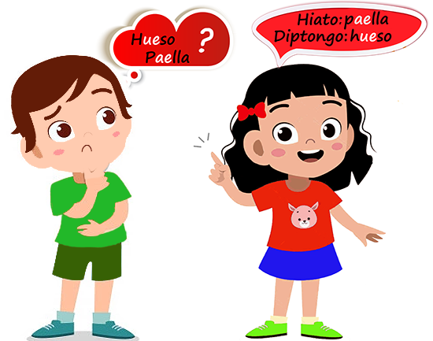

|  |
Te encuentras ante un recurso con el que aprenderás qué son los diptongos e hiatos y como se acentúan . El recurso está organizado en una actividad, que engloba dos bloques con sus respectivos ejercicios::
|
Antes de iniciarnos en faena, te voy a hacer una propuesta. Seguro que te suenan palabras y expresiones como átona, vocal cerrada, trisílabas ... Todas ellas las habrás estudiado en curso anteriores; no obstante, vamos a hacer un breve repaso que nos servirá de ayuda para las actividades que realizaremos en breve. ¡Adelante!